Learning Objectives
After completing this lesson, you’ll be able to:
- Understand and use the AttributeFilter transformer.
- Understand and use the AttributeRangeFilter transformer.
Instructions
In this lesson, you will:
- Scroll down to read the text below.
- Optional: You can view the video instead of reading the text. The video covers the text material.
- Complete the Quiz toward the bottom of the page.
- Optional: Let us know if you found this lesson relevant to your role by filling out the survey at the bottom of the page.
- Click 'Next' to mark the lesson complete.
Resources
- Starting workspace
- C:\FMEData\Workspaces\TransformAttributes\filtering-transformers.fmw
- Complete workspace
- C:\FMEData\Workspaces\TransformAttributes\filtering-transformers-complete.fmw
- Parks.zip (MapInfo TAB)
- C:\FMEData\Data\Parks\Parks.tab
AttributeFilter
The AttributeFilter transformer directs records by values in a chosen attribute. It is not a binary test (Yes/No) but a way to separate many values for a single attribute, for example:
- Is that road an Arterial, Collector, NonCity, Other, Private, Residential, or Secondary?
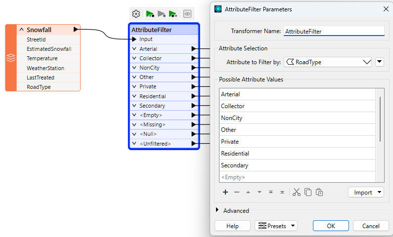
To separate this data, you would have to use seven Tester transformers, so using a single AttributeFilter saves space on the workspace canvas.

Use the Import... button to add attributes from existing datasets quickly.
In almost every scenario using multiple Tester transformers, it's possible to use a different filtering transformer to achieve the same result but using much less space on the canvas.
The AttributeFilter also works with numeric values; however, its only "operator" is to find equivalency (=), so you will rarely use it for arithmetical tests. In that scenario, the better solution is the AttributeRangeFilter.
AttributeRangeFilter
The AttributeRangeFilter carries out the same operation as the AttributeFilter, except it can handle a range of numeric values instead of just a simple one-to-one match.
For example, we might want to separate data based on a range of snowfall values, like so:
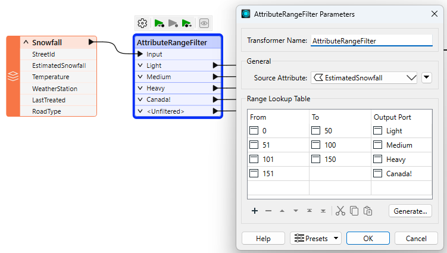
Notice that the AttributeRangeFilter parameters dialog has a Generate... button, which generates ranges automatically from a set of user-defined extents.
If the Tester, TestFilter, and AttributeFilter all filter records based on an attribute condition, then what’s the difference? When would I use each?
You can also refer to this table:
| |
Single Test |
Multiple Tests |
Test Type |
Operators |
Attributes |
| |
Single
Clause |
Multi
Clause |
Single
Clause |
Multi
Clause |
String |
Numeric |
|
|
| Tester |
Y |
Y |
– |
– |
Y |
Y |
16 |
Multiple |
| TestFilter |
Y |
Y |
Y |
Y |
Y |
Y |
16 |
Multiple |
| AttributeFilter |
Y |
Y |
– |
– |
Y |
– |
1 |
1 |
| AttributeRangeFilter |
Y |
Y |
– |
– |
– |
Y |
6 |
1 |
Exercise

Sven continues to work on his workspace. He has a few more filtering tasks to do:
- Filter parks by popularity to create a Popularity attribute
- Filter by Neighborhood and only write out parks in the Downtown neighborhood
1) Open Starting Workspace
- Start FME Workbench (2026.1 or later).
- Open the starting workspace (C:\FMEData\Workspaces\TransformAttributes\filtering-transformers.fmw).
2) Add AttributeRangerFilter
- Add an AttributeRangeFilter between the TestFilter and writer feature type.
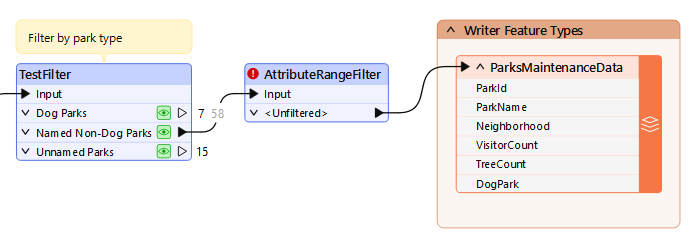
- Double-click the AttributeRangeFilter to open its parameters.
- Configure it to use a Source Attribute of VisitorCount.
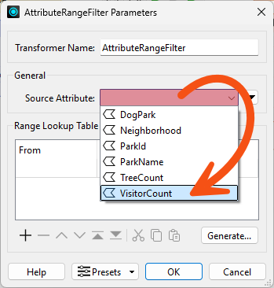
- Use the Range Lookup Table to configure the ranges, setting Unpopular parks to have between 0 and 15,000 visitors and Popular parks to have between 15,001 and 100,000.
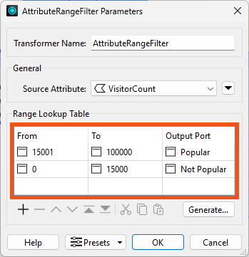
3) Add AttributeCreators and Run Workspace
Now we have filtered records into Popular, Not Popular, and Unfiltered parks, we'd like to set the value of a new Popularity attribute based on this filter.
- Add an AttributeCreator after the AttributeRangeFilter and ensures it is connected to the Popular port.
- Double-click the AttributeCreator to configure it.
- Create a new attribute called Popularity and set the value to Popular.
- Also set the Type to
varchar(100) to ensure there are enough characters for this new attribute.
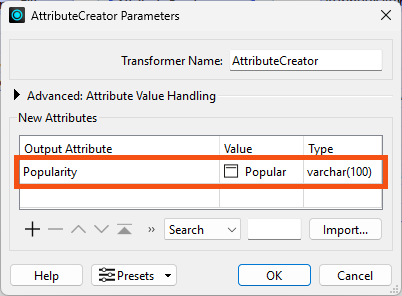
- Click OK.
- Right-click the AttributeCreator and choose Duplicate.
- Connect the copy to the Not Popular port and change it so it creates and sets Popularity to Not Popular.
- While there are some scenarios where this kind of filter and then set attribute workflow is required, there's actually a more efficient way to do this operation in FME. We'll cover it in the Use Conditional Values course.
- Run the workspace
- Confirm the AttributeRangeFilter filters the data properly and the AttributeCreators set the value of Popularity correctly.
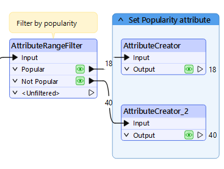
4) Add AttributeFilter
Next, we need to divide the data by Neighborhood. For now, we'd like to only write data in the Downtown neighborhood. However, we suspects we might need to work with data from other neighborhoods later on, so we doesn't want to simply use a Tester to grab only the Downtown parks. Instead, we'll use an AttributeFilter to split the data into many streams based on the value of the Neighborhood attribute.
- Add an AttributeFilter before the writer feature type and ensure both AttributeCreators are connected to it.
- Similar to step 3, there might be a more efficient way to do this operation, depending on our exact desired output. If we wanted to split the data up by Neighborhood when writing out, we could use a fanout. But for now, this procedure works well enough.
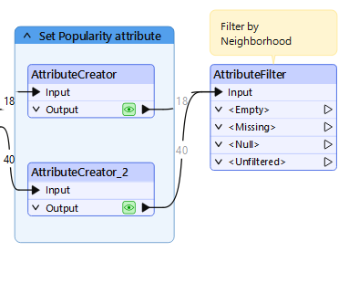
- Open the AttributeFilter to set the parameters.
- Set Attribute to Filter By to Neighborhood.
- Click the Import button and then From Data Cache.
- We have to enter the possible values to generate the ports. However, we don't have to type each one in manually; instead, we can use the Import button to populate them from the data cache.
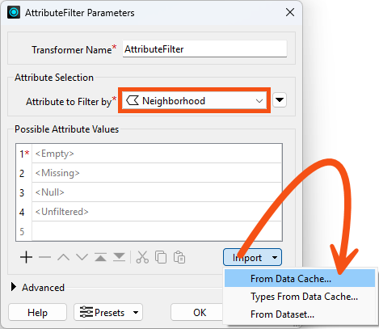
- Check both data caches and click Next:
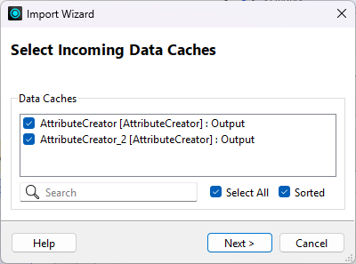
- Choose to import Values from the Neighborhood attribute and click Next.
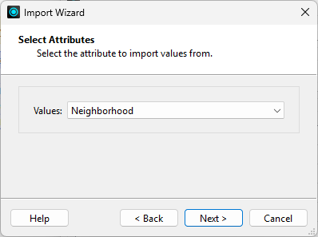
- Click Select All to use all the values and click Import.
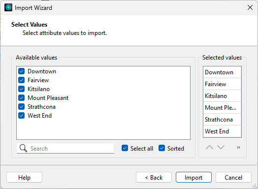
- The transformer adds these values to the Selected values list.
- Click OK.
- The transformer ports are updated.
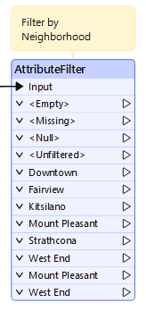
- He connects the AttributeFilter's Downtown port to the ParksMaintenanceData writer feature type.
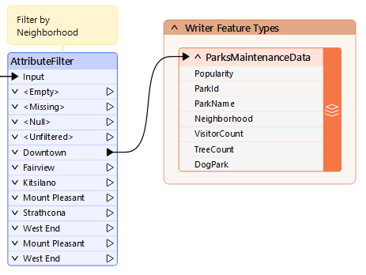
5) Run Workspace and Inspect Output
- Run the workspace
- Uses the View Written Data button on the ParksMaintenanceData writer feature type to inspect the output.
- Note that the Popularity attribute exists and has values and the data only contains parks in the Downtown neighborhood.
- Take note of the number of Downtown features; you'll need it for the quiz.
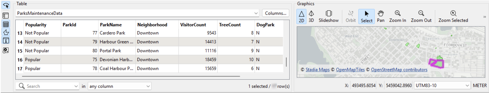
Leave Us Feedback on This Lesson